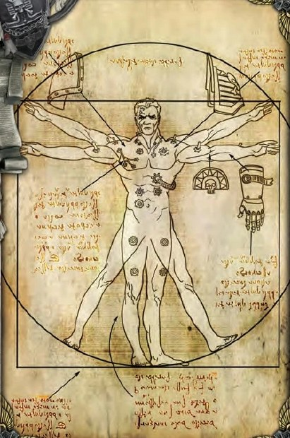

Gene-seed
| Gene-seed | |
|---|---|
 Anatomie Astartes: a Biologis chart of the implant sites, from a copy kept in a Chapter Apothecarion Artwork © Games Workshop | |
| Type | Genetic and organic implant stock |
| Creator | The Emperor of Mankind |
| Created | c. 792–798.M30, in the gene-vaults beneath the Imperial Palace, Terra |
| Source | The twenty primarchs |
| Implants | Nineteen (classic pattern); twenty-two in the Primaris pattern (from 999.M41) |
| Custodians | Chapter Apothecaries; the Adeptus Mechanicus gene-vaults on Mars |
| Regulated by | The Codex Astartes; the gene-seed tithe |
| Known flaws | The Red Thirst and Black Rage; the Curse of the Wulfen; withered implants in many lines |
Gene-seed, also written geneseed, is the genetic material from which the warriors of the Adeptus Astartes are made. It is held in the progenoid glands of every Space Marine, and from it Apothecaries grow the nineteen organs that turn a boy into a Space Marine. All gene-seed descends from the primarchs, the twenty sons that the Emperor of Mankind created on Terra in the late 30th millennium, and each strain carries the strengths and flaws of the primarch it came from.[1][2]
Gene-seed is the most precious resource of any Chapter. Without it no new warriors can be made, and a Chapter that loses its gene-seed is extinct whatever its strength in the field. The Codex Astartes, set down in c. 021.M31, binds every Chapter to recover the progenoids of its dead and to send samples to the Adeptus Mechanicus for testing and storage, a duty known as the gene-seed tithe. Corruption, mutation and wear have damaged many lines over ten thousand years, and the tithe exists above all to catch them.[1][3]
At the end of the 41st millennium the Archmagos Belisarius Cawl revealed an enhanced pattern with three more organs, the basis of the Primaris Space Marines. Since the Ultima Founding of 999.M41 most Chapters have taken warriors of the new pattern, and the old and new gene-seed now exist side by side.[3]
Origins
[edit]The Emperor drew on earlier work to make the Space Marines. The Thunder Warriors of the Unification Wars were his first gene-forged soldiers, made in the M30 laboratories of the Himalazian mountains and Luna, and they were powerful but short-lived. The primarchs were his second and greater work, made in c. 792.M30 in the gene-vaults beneath the Imperial Palace.[2]
When the infant primarchs were scattered across the galaxy by the powers of the Warp, the Emperor still held the genetic patterns he had taken from them. From these he made the gene-seed of the twenty Space Marine Legions, which were raised in the closing years of the Unification Wars and the first years of the Great Crusade (from c. 798.M30). Imperial accounts describe the gene-seed as a set of tailored organ cultures, each keyed to the pattern of one primarch, not as a direct copy of his body.[2][4]

The implants
[edit]The classic pattern of the Adeptus Astartes has nineteen organs, implanted in a fixed order over several years. Some grow only in an adolescent body, which is why aspirants are taken young. The organs are listed in Imperial texts as follows.[1][5]
| No. | Organ | Function |
|---|---|---|
| 1 | Secondary heart | A second heart that can sustain the body alone |
| 2 | Ossmodula | Strengthens and lengthens the skeleton; fuses the ribcage |
| 3 | Biscopea | Drives muscle growth |
| 4 | Haemastamen | Alters the blood to carry the new organs |
| 5 | Larraman's organ | Makes cells that clot wounds within seconds |
| 6 | Catalepsean node | Lets one half of the brain sleep at a time |
| 7 | Preomnor | A pre-stomach that neutralises poisons |
| 8 | Omophagea | Lets the Marine absorb memories from flesh he eats |
| 9 | Multi-lung | A third lung that can breathe poisoned air and water |
| 10 | Occulobe | Sharpens the eyes and sight in low light |
| 11 | Lyman's ear | Hearing and balance; resists disorientation |
| 12 | Sus-an membrane | Lets the Marine enter suspended animation |
| 13 | Melanochrome | Shields the skin from radiation |
| 14 | Oolitic kidney | Filters the blood of toxins |
| 15 | Neuroglottis | Tastes and identifies chemicals |
| 16 | Mucranoid | Seals the skin against cold and vacuum |
| 17 | Betcher's gland | Lets the Marine spit corrosive venom |
| 18 | Progenoid glands | Store the gene-seed for recovery |
| 19 | Black carapace | Neural interface with power armour |
The Primaris pattern adds three organs: the sinew coil, a mesh of fibre around the muscles and organs; the magnificat, which strengthens the action of the other implants; and the Belisarian furnace, which floods the body with healing chemicals when it is badly wounded.[3]
Progenoid glands
[edit]The two progenoid glands, one in the neck and one in the chest, are what make the Chapters self-sustaining. They grow germ cells of each implant from the Marine's own gene-seed. The neck gland matures about five years after implantation and the chest gland after about ten. When a Marine falls, his Chapter's Apothecaries cut out the progenoids with a reductor, and each mature gland can supply organs for a new aspirant. A Chapter that cannot recover its dead cannot replace them.[5][1]
The gene-seed tithe and the Mechanicus
[edit]After the Horus Heresy (005–014.M31), the Second Founding of c. 021.M31 broke the Legions into Chapters, and the Codex required each Chapter to send part of its gene-seed to the Adeptus Mechanicus. The Mechanicus tests it for corruption and keeps it in sealed gene-vaults on Mars and elsewhere, from which the High Lords draw stock for new Foundings. A Chapter that fails the tithe can be declared renegade; the Badab War of 901–913.M41 began when the Astral Claws withheld theirs.[1][6]
The Mechanicus has also tried to improve gene-seed, with mixed results. The Twenty-First Founding of M36, called the Cursed Founding, used gene-seed that Martian genetors had altered, and several of its Chapters, among them the Lamenters and the Minotaurs, are said to bear hidden defects.[3][a]
Flaws and mutations
[edit]Gene-seed changes over time, and most lines have drifted from the primarchs' pattern. Some flaws are known to the whole Imperium:
- The sons of Sanguinius suffer the Red Thirst, a craving for blood, and the Black Rage, a madness in which the warrior relives the primarch's death on the Vengeful Spirit in 014.M31.
- The Space Wolves carry the Canis Helix, which can turn a warrior into a feral Wulfen.
- The Imperial Fists line lacks a working Betcher's gland and sus-an membrane, and the Raven Guard line has lost several organs, including the melanochrome's normal function.
- The gene-seed of the traitor Legions has been changed by Chaos since the Heresy, and the Mechanicus burns any sample of it that it finds.
The Primaris Space Marines were in part an answer to this drift. Cawl claims to have worked from purer samples given to him in M31, and the Imperium reports that the new warriors suffer the old flaws less, although Primaris sons of Sanguinius still feel the Thirst.[3][7]
The Primaris gene-seed
[edit]Roboute Guilliman gave Cawl the task of improving the Space Marines in the last years of the Heresy era, and Cawl worked on it in secret beneath Mars for some ten thousand years. In 999.M41, when Guilliman returned to life, Cawl revealed the new gene-seed and the first Primaris warriors, who had been kept in stasis for centuries. The Ultima Founding that followed (999.M41 to the early 42nd millennium) raised new Chapters and sent Primaris reinforcements to nearly all the old ones. Existing Marines can now cross the Rubicon Primaris, a surgery that adds the three new organs to an adult body.[3][7]
Timeline
[edit]| Date | Event |
|---|---|
| M30 | The Thunder Warriors are made for the Unification Wars |
| c. 792.M30 | The primarchs are created on Terra |
| c. 798.M30 | The Legions, raised from primarch gene-seed, begin the Great Crusade[b] |
| c. 021.M31 | The Codex Astartes sets the rules for gene-seed recovery and the tithe |
| c. 021.M31 | The Second Founding divides the Legions into Chapters |
| M36 | The Cursed Founding uses altered gene-seed |
| 901–913.M41 | The Badab War, begun over a withheld tithe |
| 999.M41 | Cawl reveals the Primaris gene-seed; the Ultima Founding begins |
See also
[edit]Notes
[edit]- ^ No surviving record gives the exact year of the Twenty-First Founding. Most Administratum tables place it in M36, after the Age of Apostasy.
- ^ The Legions were raised over several years before and after this date; the year is the start of the Crusade.
References
[edit]- ^ a b c d e Haley, Guy. Belisarius Cawl: The Great Work (novel). Black Library, Ch. 19.
- ^ a b c Codex Adeptus Astartes - Space Marines (8th Edition), pp. 10-12. Games Workshop.
- ^ a b c d e f Codex Adeptus Astartes - Space Marines (7th Edition) (Digital Edition), "The Forging of Heroes". Games Workshop.
- ^ Codex: Black Templars (4th Edition), pg. 10. Games Workshop.
- ^ a b Warhammer 40,000: Compendium (2nd Edition), "The Origins of the Legiones Astartes" by Rick Priestley, pg. 7. Games Workshop.
- ^ Index Astartes I, "Rites of Initiation - The Creation of a Space Marine" by Rick Priestley & Gav Thorpe, pp. 2-9.
- ^ a b White Dwarf 98 (UK) (1988) "Chapter Approved: The Origins of the Legiones Astartes" by Rick Priestley, pg. 13.